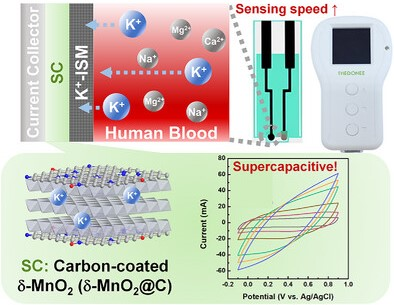

01 / BIOSENSORS AND BIOELECTRONICS
Calibration-free K⁺ sensing
Enzyme cascade on laser-induced graphene
View paper ↗Underlined name indicates my authorship. IF = Journal Impact Factor.
VISUAL OVERVIEW
Visual summaries from each publication. Select a figure to view the original at full size.
Enzyme cascade on laser-induced graphene
View paper ↗
View full figure ↗ View full figure ↗
View full figure ↗
Point-of-care measurement in hemodialysis
Visual abstract by Denisse Arellano, MDView paper ↗